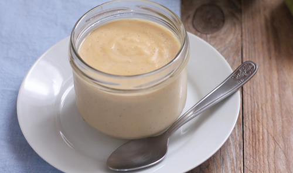
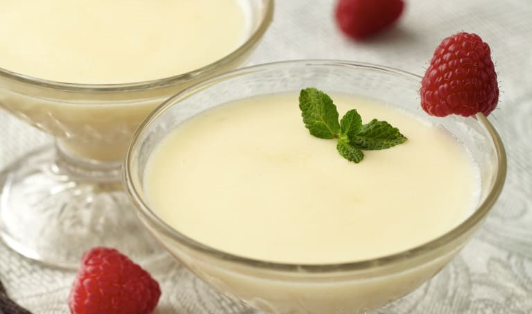
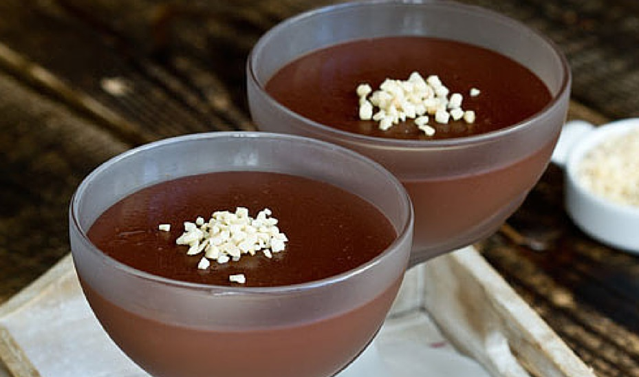

Popis
Puding je velice jednoduchý pokrm, který se hodí spíše jako dezert.
K jeho přípravě není potřeba vůbec nic znát, protože celý postup je napsaný přímo na něm.
Pokud nemáte rádi samotný puding, můžete ho doplnit o piškoty, ovoce (maliny, jahody, kolečka banánu) nebo kakao.
Fantazii se meze nekladou.



Příprava
Suroviny
- prášek na puding
- mléko
Postup
- přečteme si postup přípravy napsaný na pytlíku s práškem
- postup aplikujeme
Cena
Uvážíme cenu prášku na puding a cenu mléka.
Nejlevnější vanilkový puding se dá koupit za 6,- kč a spotřebujeme právě jeden tento pytlík.
Mléko dnes obvykle stojí okolo 20,- kč a spotřebujeme půlku krabice, což je 500ml.
16,- kč/ks
Cena za kus je vypočítána pouze s ceny surovin. Nezohledňuje cenu energií a použitého nádobí.